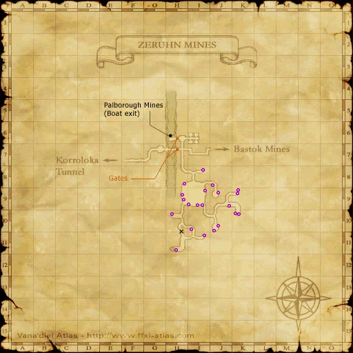
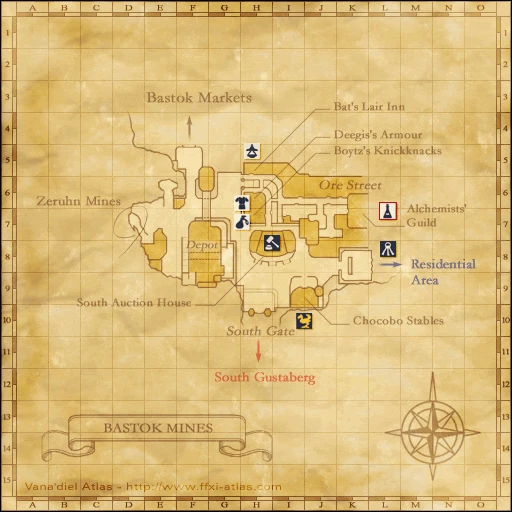

Before you begin
Bastok allegiance and Rank 1.
People in this mission

Walkthrough
- Accept the mission from a Bastok mission guard.
- Enter Zeruhn Mines through Bastok Mines (D-7). Speak with Makarim at (H-11) for the Zeruhn Report.
- Return to the Metalworks and speak with Naji near the President’s Office (J-8).
Locations and references
| Place / NPC | Location | Reference |
|---|---|---|
| Makarim | Zeruhn Mines (H-11) | Location reference |
| Naji | Metalworks (J-8) | Location reference |
Route maps


Completion and reward
Rank Points
Area maps
Open a zone below, then select a map to enlarge it. Match the named floors and grid coordinates in the steps; these are reference area maps, not a live position tracker.
Zeruhn Mines


Bastok Mines


Metalworks

References
HorizonXI Wiki: Bastok 1-1 · LandSandBoat mission definition
The route summary covers the original story. Other servers’ extra rewards, level-cap settings and Trust rules are not promises of Zenith behavior. Confirm battlefield entry conditions in game.
NPC map locations
| NPC | Game-map location |
|---|---|
| Naji | Metalworks (J-8) |
Additional level-75 reference
|
Walkthrough
- Speak with the one of the Bastok Gate Guards and select the mission called The Zeruhn Report.
- Upon finishing the cutscene you will have to head towards the Zeruhn Mines. The zone into Zeruhn Mines is located in the western area of Bastok Mines.
- Inside Zeruhn Mines, look for the NPC named Makarim located at (H-11).
- Makarim asks you to deliver a report to Naji at the President's Office. You can find the President's Office in Metalworks.
- Note: The dialog between Naji and Lucius will differ, depends on, if you "opened" the Report or not (checked the Key Item).
- Return to the Bastok Gate Guard to complete the mission.
Game Description
- Mission Orders
- Collect Overseer Makarim's report from the Zeruhn Mines, in the western section of the Bastok Mines District. Deliver said report to Sir Naji, a Musketeer stationed near the President's Office.
slightly different.
Adapted from Eden Wiki: The Zeruhn Report · Contributors and history · CC BY-SA 4.0. Revision 2245. Layout, links and optional background text adapted for Zenith.